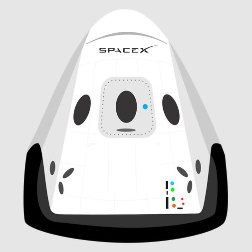

 Hyperblog
Tu blog de cabecera
Este es el título atractivo e interesante del post
Y este es el párrafo de inicio donde vamos a explicar las cosas increíbles que se puede hacer con ramas

Los blogs son la mejor forma de compartir informacion y ideas. Mucho más que ir a conferencias o salir en youtube.
Suscribete y dale like